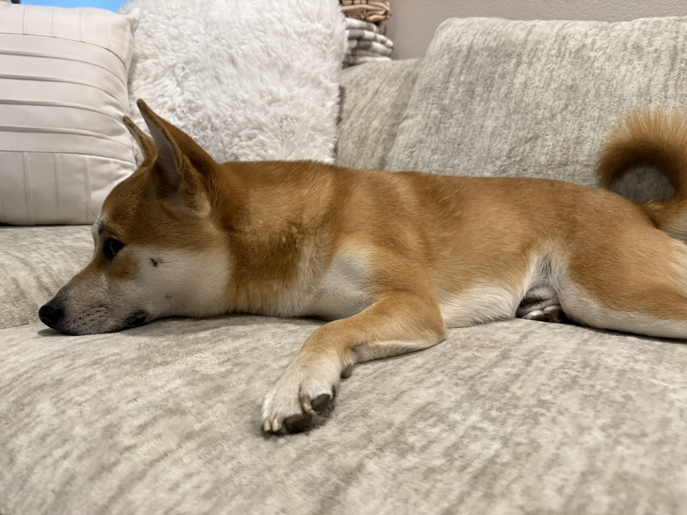

Blog of Koa

Koa Gets Adopted
Before Koa was adopted, he was actually named Benny. At the time Koa was only 3 months old when he we stumbled upon a random pet store near a local boba shop. Our of pure curiousity we decided to take a peak inside. Low and behold to our surprise I would fall in love with this little Shiba Inu who could literally be held in one hand. Koa was the most energetic out of all the dogs in the pet store, jumping up and down to greet everyone. After the first visit I was undoubtedly star struck and I continued to vist him several times at the pet store while begging my parents to come meet him. We already had two dogs at home, so adopting another dog would not be easy. My mother was very against getting another dog especially because our other pets were getting quite old and we didn't know how they'd treat a puppy. But despite her resistance I managed to convince both of my parents to come down and just have a look at him. After their first visit I could tell they instantly fell in love with him too, but the story doesn't end there. Although we all loved this little ball of golden fur and energy adoptin a dog is an expensive and time consuming process. My parents needed to think about this decision and decided to have a look at him for a second time without me. After that second visit on the way home my mom got into a car accident, totalling her truck. My mom was bruised, but luckily she was unharmed. After such a terrible incident I assumed adopting Koa was completely out of the picture, now that we'd have to purchase a new vehicle and mom was not feeling the best after the accident. Although to my surprise one fateful day they pulled the trigger and purchased Koa. He was gifted to our family as a healing buddy for my mom and as a graduation gift to me. Since that day he has made our lives so much more loving and interesting and that is the story of how we adopted Koa!
Koa Turns Three
To